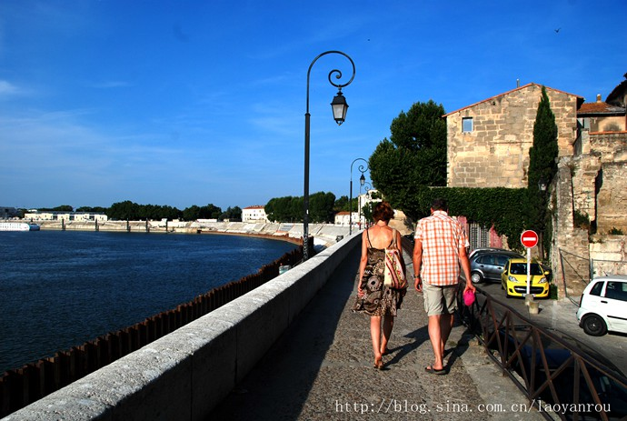
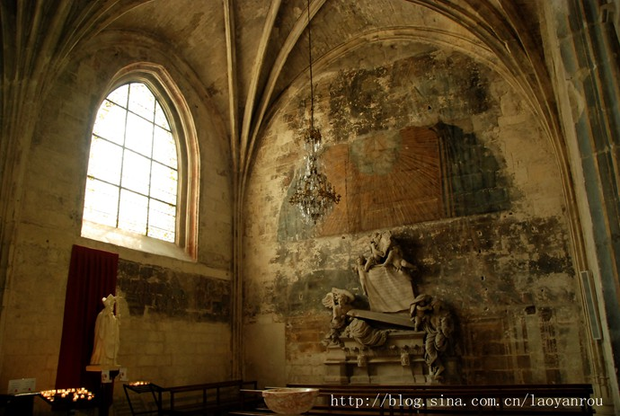
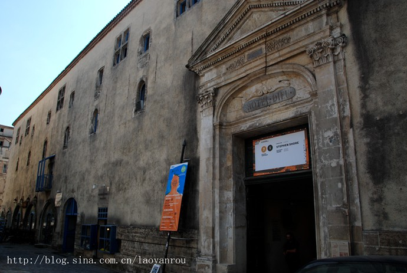
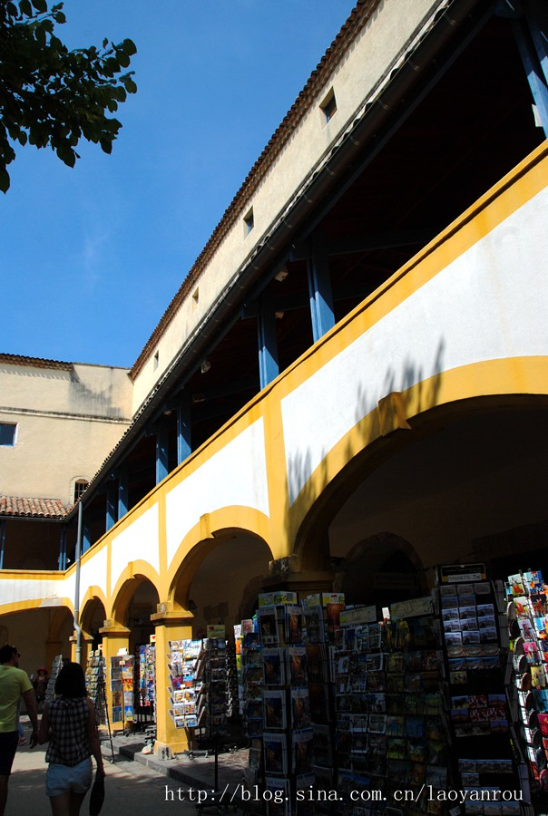
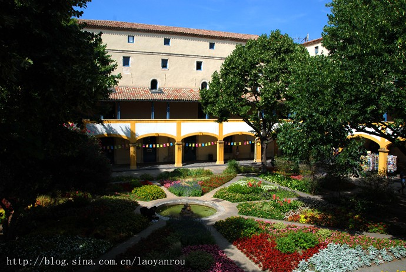
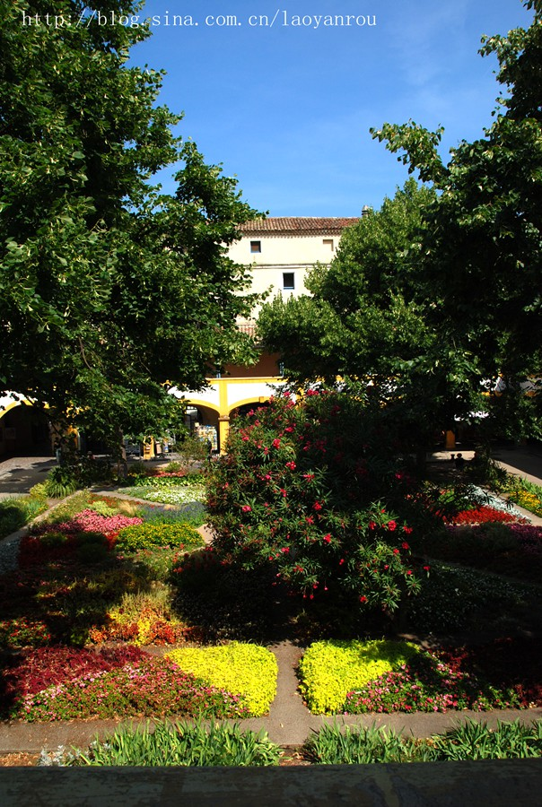
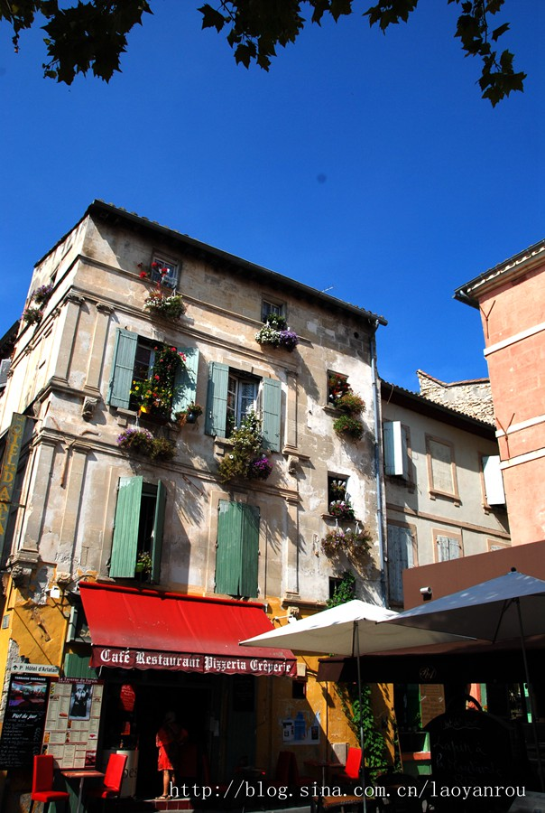
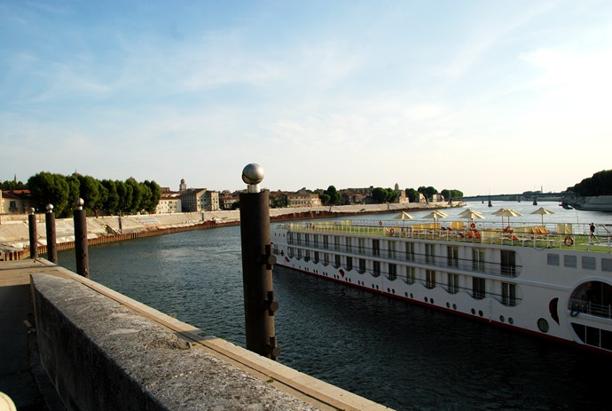
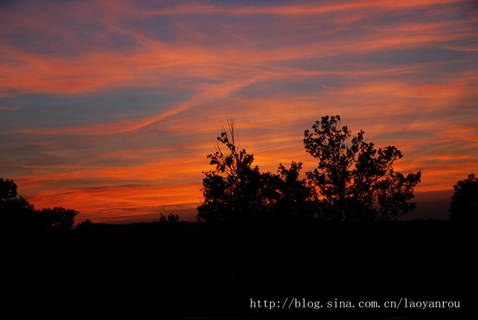

欧游札记之徜徉法兰西(DAY4.3凡高的阿尔勒)

穿过了伫立着罗马方尖碑的共和广场，在古老的罗马式圣托菲姆教堂里面悄悄地转了一圈，我们便直接前往鼎鼎大名的凡高医院探寻其留下的踪迹。这家医院在整个阿尔勒的罗马建筑群里其貌不扬，如果不是事先做了功课估计压根都不会想到这座外墙脏兮兮门楣上刻着“HOTEL DIEU”字样的建筑曾经住过史上最伟大的印象派画家文森特•凡高！不过进入医院内部后才发现其实法国人对凡高还是挺够意思的，里面由两层平房围起的一个四方小院子基本还是维持了凡高居住时的原貌的（通过对比凡高在此画的一幅油画和现状的区别得出此结论），小院子四周的拱门走廊仍然保存黄白相间的亮丽，而院正中央的小花园的花草树木也是围绕着中心的一个喷泉向外辐射开来，生长得错落有致，花红柳绿般的郁郁葱葱。我们一直想在二楼寻找着凡高画那副画的时候所在的位置，参照着画的角度找了半天总算找到了一个偏僻房间外面一小块地方。可是站在那里我们唯一能感受到的就是与凡高当年创作时看到几乎相同景色，但是却永远无法体会到他当时创作的灵感和激情。这位以心灵作画的后印象派大师从巴黎来到南法的阿尔勒定居后受其猛烈的阳光和刺眼的麦田所刺激而进入了疯狂巅峰创作时期，尽管与高更激辩割掉耳朵且梅毒发作导致精神失常被送入了精神病医院，但凡高仍未放弃绘画创作，画出了一幅幅表现强烈情绪及视觉冲击的更成熟、大胆、令人震撼的作品。我们根本看不出这是一个间歇发作的精神病人的画作，《向日葵》那浓烈的色彩运用，《星夜》精妙的光影构图都仿佛告诉人们绘画已深深嵌入凡高的灵魂和心灵，即便精神崩溃、心智不明仍然不影响其用绘画表达他的心绪和激情。可以说凡高的每一幅画都值得好好琢磨，通过绚烂明亮的色块、看似粗犷的形体描绘及精心构造的光影布局，凡高按照自己心灵的理解赋予了画中的人物和风景无尽魅力和不朽的生命力！





在凡高被送进精神病院之前，他还在阿尔勒的论坛广场旁边的兰卡散尔咖啡馆度过了一段较为自由快乐的时光并创作了著名的画作《星空下的咖啡座》（开创了夜间画人工照明户外写生的先例），我们从凡高医院出来后来到论坛广场，发现咖啡馆已被改名为凡高咖啡馆，而且店主还刻意的修饰模仿了凡高画中咖啡馆的各种细节和模样，比如灯光下亮黄的咖啡馆墙壁和咖啡座上方遮阳的黄色雨篷，咖啡馆二楼的窗户样式和咖啡台桌的摆放形式，甚至连画面右边所描绘的几乎同一位置的大树都仿佛将时光定格在了凡高的那个年代。唯一让我们惊讶的是，据说的宾客满座的情形并没有看到，仅有一两桌黄皮肤的国人在帮衬，与论坛广场四周的咖啡馆熙熙攘攘座无虚席的场景似乎有点格格不入，我们猜测是由于盛名所累、顾客爆棚导致店主抬高消费价格导致了游客们的望而却步吧！（其中包括我们！坚决不为虚名买单而帮衬了旁边的露天小餐馆），同样是模仿凡高当时所处的情景，与免费参观的凡高医院相比，咖啡馆的商业铜臭味浓多了，看来法国商人们尽管艺术修为高一些，但也不免落于天下乌鸦一般黑的唯利是图的俗套啊！

晚餐后阿尔勒的阳光依然猛烈，我们准备沿着罗纳河边一路走回火车站搭上回阿维尼翁的列车，也顺便探访一下凡高画《罗纳河星空》的地方。走在傍晚的罗纳河边虽然有些凉风习习，但是如果无遮无拦的远离树荫的话还是挺“烤”验人的。沿河而建的小城古建筑也不少，偶尔中间出现一两个小型的舞台提醒我们夜晚的阿尔勒即将变身为一个天籁弥漫的小城，与静静流淌的罗纳河水的淙淙之音合奏出一曲恬美的交响乐。我们打着伞、戴着帽顶着太阳走了不知多久，尽管以河堤上悠闲散步嗮太阳的法国人为榜样来鼓励自己，但除了地面上标示的凡高一直向前的脚步的标记外看不到任何终点迹象。眼看快要到火车站了，陷入基本无望的我们决定离开河堤走到树荫下去暂避日头，而此时突然往河堤上的一瞥看到了一幅很小的蓝底油画图片，忙过去一瞅果然是《罗纳河星空》，按照画中的角度往罗纳河看去，昔日的河岸早已被钢筋混凝土覆盖，停在岸边的豪华游艇也取代了画中的小渔船，可能只有千古流淌的河水和繁星点点的星空才能勾起对凡高往事的回忆吧，然而非常具有讽刺意味的是，如今被人们视为神一般存在而应进入艺术殿堂受供奉的凡高大师当年穷困潦倒，一生只卖出了一幅油画（《赤色的葡萄园》），而据说这幅画也是在他精神失常后由其弟弟为了鼓励他而委托一位比利时朋友以400法郎收购的，除此以外就再也没有人对他的画作表示过认可，直到他去世。不知道我们当代的诸多号称艺术大师的大人物们对此做何理解？一位真正的艺术巨匠由于特立独行不被当世所理解而不受世俗荣辱所侵扰，往往能潜心于自己的世界里酝酿巨大艺术能量的光芒，而这些光芒只有经过时间和历史的锤炼检验后方能耀世绽放为大众所认知和推崇，反观我们当代某些所谓艺术大师们的“巨作”，不管是书画作品、文学作品还是影视作品也好，在历经了迎合普罗大众的商业化制作、沸沸扬扬的包装炒作而名利双收的大红大紫过程后，还有多少能从浮躁、逐利、媚俗的潮流中出淤泥而不染为后世称道的呢？想必大部分已如泥沙俱下般被遗忘在历史的长河里面了吧，所谓真正的艺术品一定是走心的作品，大多注定忍受曲高和寡的漫长孤寂。


在罗纳河边与凡高的阿尔勒道别后踏上了返回阿维尼翁老车站的列车并顺利赶上一辆shuttle回到TGV车站酒店，酒店附近比较荒凉，超市餐馆商店一概欠奉，惟有默默注视着窗外逐渐由浅蓝变成深蓝最后变为墨蓝的天空上轻轻掠过的一缕缕絮状红霞，憧憬着第二天经典薰衣草小镇一日游的行程，不知不觉进入了梦乡。
